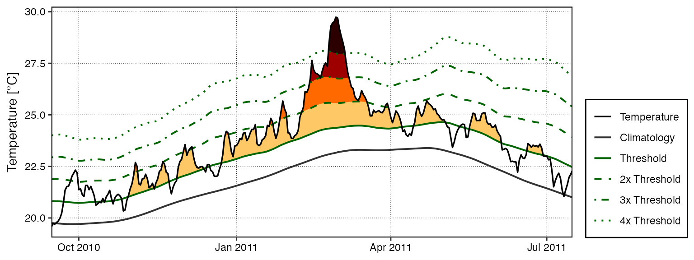

vignettes/event_categories.Rmd
event_categories.RmdIn Hobday et al. (2018) a naming convention for MHWs was proposed that divides them into four categories based on their maximum observed intensity. The naming convention and a brief description are as follows:
| Category | Description |
|---|---|
| I Moderate | Events that have been detected, but with a maximum intensity that does not double the distance between the seasonal climatology and the threshold value. These are common and not terribly worisome. |
| II Strong | Events with a maximum intensity that doubles the distance from the seasonal climatology to the threshold, but does not triple it. These are not uncommon, but have yet to be shown to cause any long term biological or ecological damage. |
| III Severe | Thankfully these are relatively uncommon as they have been linked to damaging events. The 2003 Mediterranean MHW was this category. |
| IV Extreme | Events with a maximum intensity that is four times or greater than the aforementioned distance. These events are currently rare, but are projected to increase with frequency. This is troubling as events in this category are now well documented as causing widespread and lasting ecological damage. The 2011 Western Australia MHW was this category. It is also the logo of this package. |
The categories of MHWs under the Hobday et al. (2018) naming scheme may be calculated with the heatwaveR package using the category() function on the output of the detect_event() function. By default this function will order events from most to least intense. Note that one may control the output for the names of the events by providing ones own character string for the name argument. Because we have calculated MHWs on the Western Australia data, we provide the name “WA” below:
# Load libraries
library(dplyr)
library(ggplot2)
library(heatwaveR)
# Calculate events
ts <- ts2clm(sst_WA, climatologyPeriod = c("1982-01-01", "2011-12-31"))
mhw <- detect_event(ts)
MHW_cat <- category(mhw, S = TRUE, name = "WA")
# Look at the top few events
tail(MHW_cat)## # A tibble: 6 x 11
## event_no event_name peak_date category i_max duration p_moderate p_strong
## <int> <fct> <date> <chr> <dbl> <dbl> <dbl> <dbl>
## 1 60 WA 2012b 2012-12-31 II Stro… 3.42 14 64 36
## 2 29 WA 1999 1999-05-22 II Stro… 3.64 95 63 37
## 3 47 WA 2009 2009-03-25 II Stro… 2.38 7 57 43
## 4 72 WA 2015 2015-10-02 II Stro… 2.46 7 57 43
## 5 41 WA 2008a 2008-04-14 III Sev… 3.83 35 57 23
## 6 52 WA 2011a 2011-02-28 IV Extr… 6.58 105 52 27
## # … with 3 more variables: p_severe <dbl>, p_extreme <dbl>, season <chr>Note that this functions expects the data to have been collected in the southern hemisphere, hence the argument S = TRUE. If they were not, one must set S = FALSE as seen in the example below. This ensures that the correct seasons are attributed to the event.
res_Med <- detect_event(ts2clm(sst_Med, climatologyPeriod = c("1982-01-01", "2011-12-31")))
res_Med_cat <- category(res_Med, S = FALSE, name = "Med")
tail(res_Med_cat)## # A tibble: 6 x 11
## event_no event_name peak_date category i_max duration p_moderate p_strong
## <int> <fct> <date> <chr> <dbl> <dbl> <dbl> <dbl>
## 1 60 Med 2011d 2011-09-15 II Stro… 2.94 7 57 43
## 2 30 Med 2003a 2003-06-20 II Stro… 5.05 30 53 47
## 3 67 Med 2012b 2012-08-20 II Stro… 4.32 18 44 56
## 4 93 Med 2018a 2018-04-21 II Stro… 3.34 14 43 57
## 5 46 Med 2007c 2007-04-25 III Sev… 4.05 19 42 53
## 6 75 Med 2014 2014-10-18 II Stro… 3.34 144 39 60
## # … with 3 more variables: p_severe <dbl>, p_extreme <dbl>, season <chr>A quick and easy visualisation of the categories of a MHW may be accomplished with event_line() by setting the category argument to TRUE.
event_line(mhw, spread = 100, start_date = "2010-11-01", end_date = "2011-06-30", category = TRUE)
Were one to want to visualise the categories of a MHW ‘by hand’, the following code will provide a good starting point.
# Create category breaks and select slice of data.frame
clim_cat <- mhw$clim %>%
dplyr::mutate(diff = thresh - seas,
thresh_2x = thresh + diff,
thresh_3x = thresh_2x + diff,
thresh_4x = thresh_3x + diff) %>%
dplyr::slice(10580:10690)
# Set line colours
lineColCat <- c(
"Temperature" = "black",
"Climatology" = "gray20",
"Threshold" = "darkgreen",
"2x Threshold" = "darkgreen",
"3x Threshold" = "darkgreen",
"4x Threshold" = "darkgreen"
)
# Set category fill colours
fillColCat <- c(
"Moderate" = "#ffc866",
"Strong" = "#ff6900",
"Severe" = "#9e0000",
"Extreme" = "#2d0000"
)
ggplot(data = clim_cat, aes(x = t, y = temp)) +
geom_flame(aes(y2 = thresh, fill = "Moderate")) +
geom_flame(aes(y2 = thresh_2x, fill = "Strong")) +
geom_flame(aes(y2 = thresh_3x, fill = "Severe")) +
geom_flame(aes(y2 = thresh_4x, fill = "Extreme")) +
geom_line(aes(y = thresh_2x, col = "2x Threshold"), size = 0.7, linetype = "dashed") +
geom_line(aes(y = thresh_3x, col = "3x Threshold"), size = 0.7, linetype = "dotdash") +
geom_line(aes(y = thresh_4x, col = "4x Threshold"), size = 0.7, linetype = "dotted") +
geom_line(aes(y = seas, col = "Climatology"), size = 0.7) +
geom_line(aes(y = thresh, col = "Threshold"), size = 0.7) +
geom_line(aes(y = temp, col = "Temperature"), size = 0.6) +
scale_colour_manual(name = NULL, values = lineColCat,
breaks = c("Temperature", "Climatology", "Threshold",
"2x Threshold", "3x Threshold", "4x Threshold")) +
scale_fill_manual(name = NULL, values = fillColCat, guide = FALSE) +
scale_x_date(date_labels = "%b %Y") +
guides(colour = guide_legend(override.aes = list(linetype = c("solid", "solid", "solid",
"dashed", "dotdash", "dotted"),
size = c(0.6, 0.7, 0.7, 0.7, 0.7, 0.7)))) +
labs(y = expression(paste("Temperature [", degree, "C]")), x = NULL)The functionality for the detection and visualisation of categories for MCSs has not yet been implemented in heatwaveR. There are plans to do so, but it is currently a low priority as no research groups that we are aware of are looking at MCS categories. If your research group is interested in doing so, please contact us and we will bump up the priority of this feature.